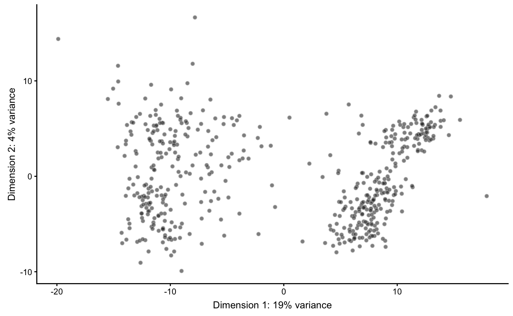
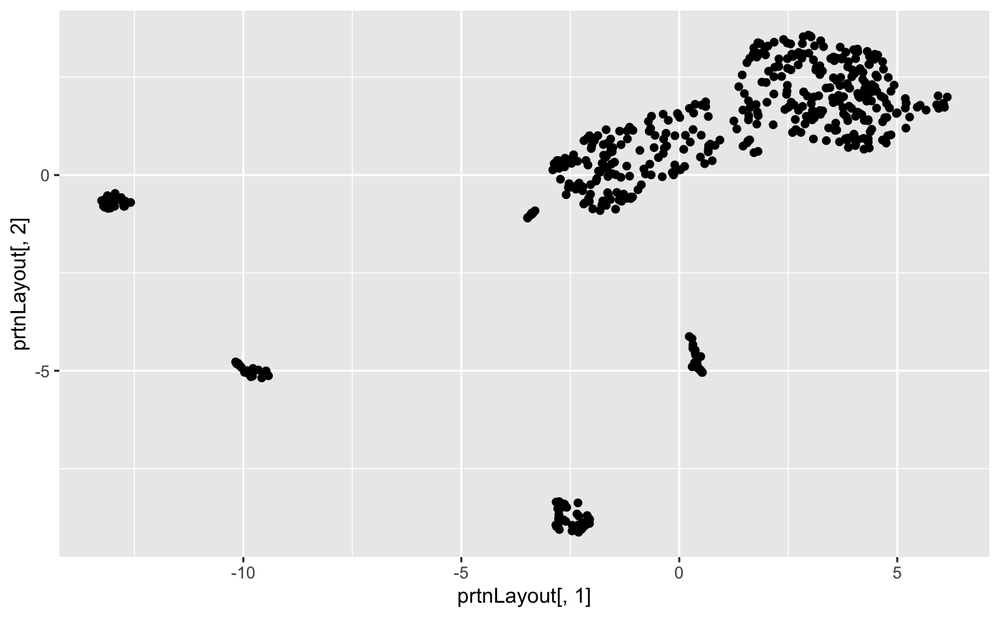
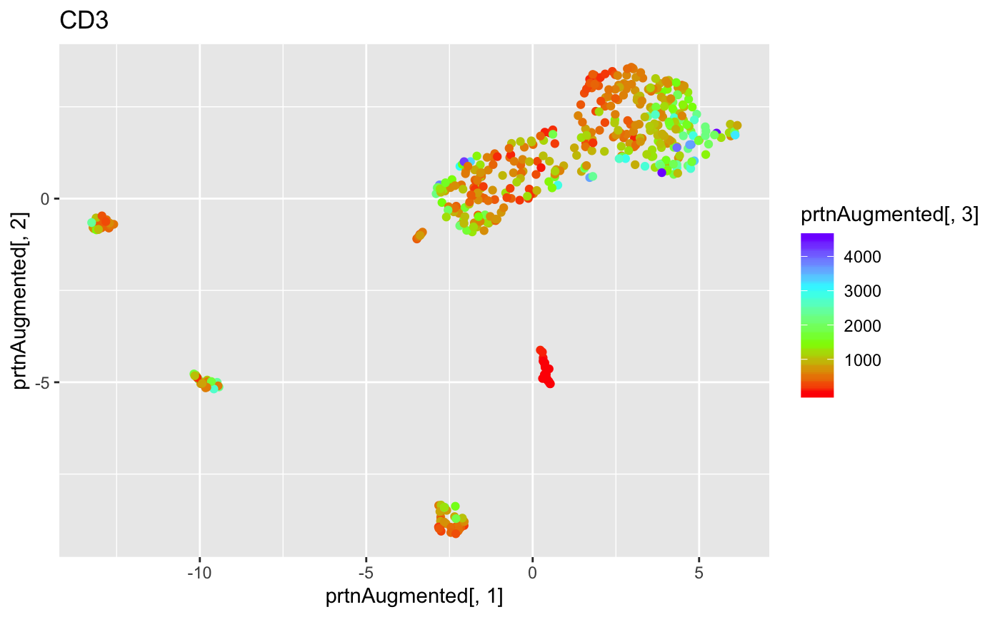
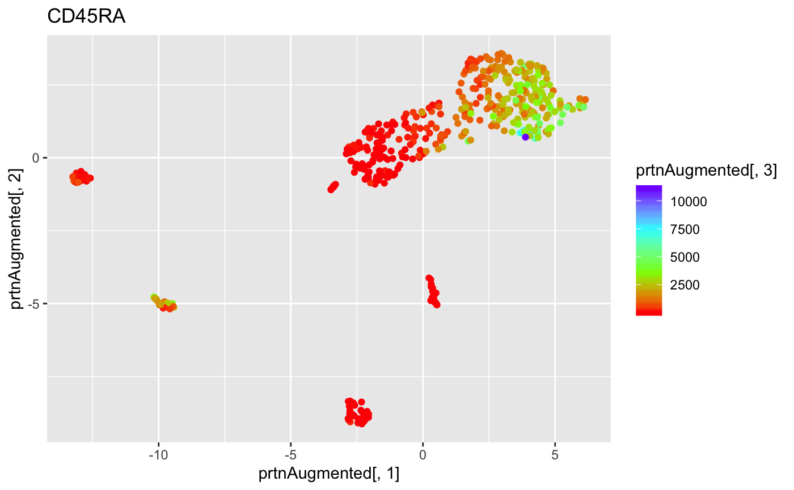
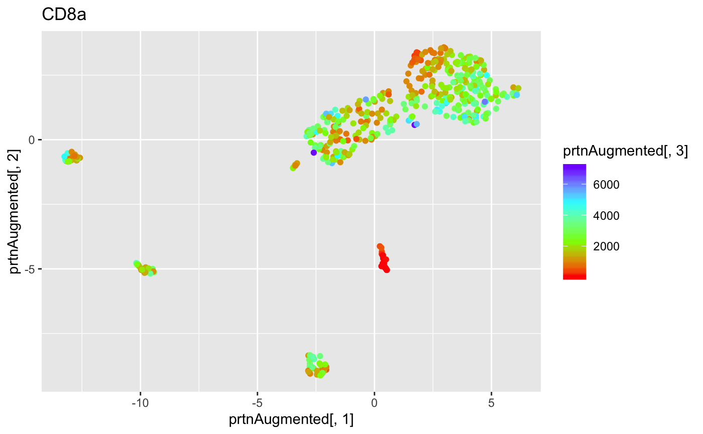
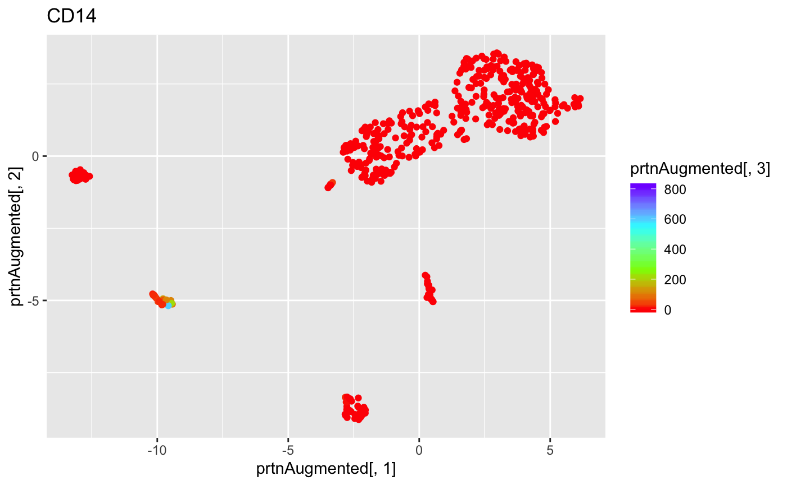
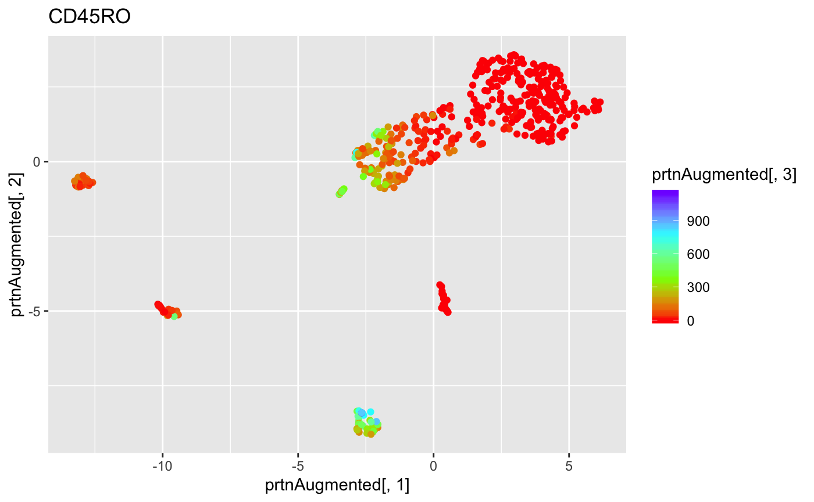
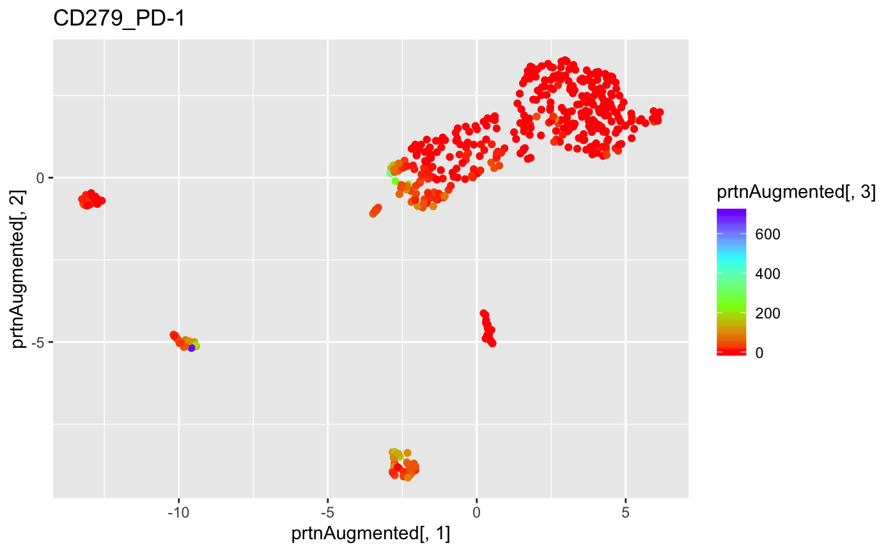
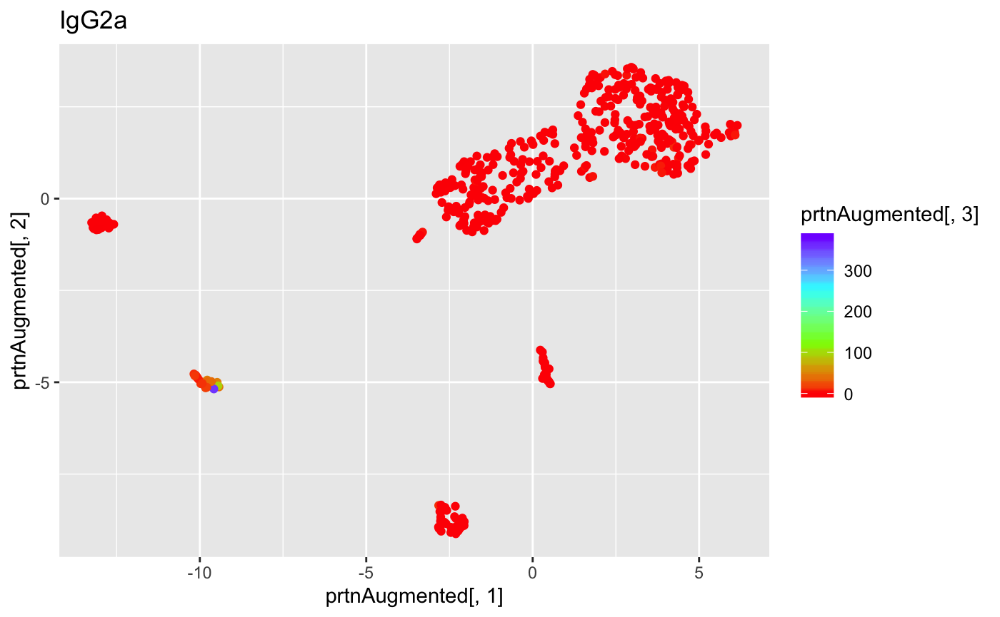
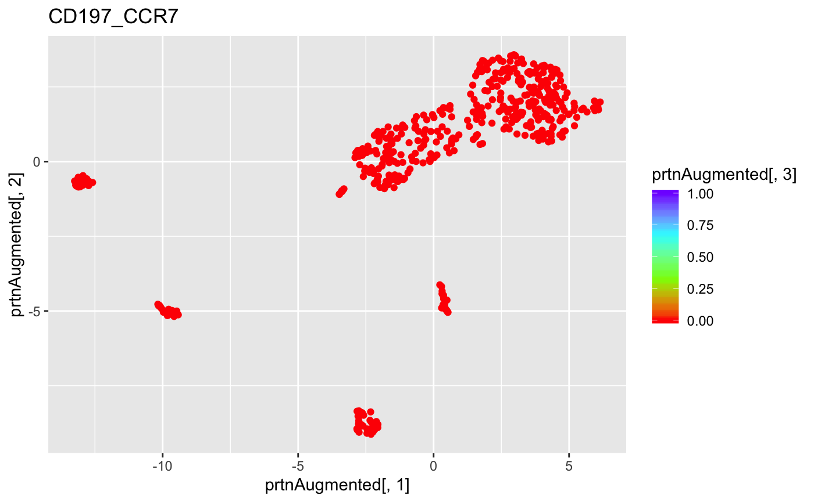

10xVisualization
10xVisualization.RmdFirst we will read and subset the data into manageable sizes.
subsetSize <- 500
sce1 <- read10xCounts("10Xdata/vdj_v1_hs_aggregated_donor1_filtered_feature_bc_matrix.h5")
numRows <- nrow(counts(sce1))
sce1 <- sce1[1:numRows, 1:subsetSize]
sce2 <- read10xCounts("10Xdata/vdj_v1_hs_aggregated_donor2_filtered_feature_bc_matrix.h5")
sce2 <- sce2[1:numRows, 1:subsetSize]
sce3 <- read10xCounts("10Xdata/vdj_v1_hs_aggregated_donor3_filtered_feature_bc_matrix.h5")
sce3 <- sce3[1:numRows, 1:subsetSize]
sce4 <- read10xCounts("10Xdata/vdj_v1_hs_aggregated_donor4_filtered_feature_bc_matrix.h5")
sce4 <- sce4[1:numRows, 1:subsetSize]Separate the matrix into separate segments by type of observation, where gex1 is all gene expression rows, prtn1 is all protein rows, and ag1 as all antigen rows.
gex1 <- sce1[rowData(sce1)$Type == "Gene Expression"]
ngex1 <- sce1[rowData(sce1)$Type == "Antibody Capture"] #gets all data that is not gene expression data -> antibody capture data
prtn1 <- ngex1[1:14,] #dirty way to get all protein data
ag1 <- ngex1[15:64,] #dirty way to get all antigen dataAntigen Data
To show a histogram of each antigen’s frequency: (code not run)
for (i in 1:50)
{
ag <- ag1[i,]
agList <- c(unname(as.matrix(counts(ag))))
agList <- agList[agList > 0] #excludes cells with no measured antigen
hist(agList, breaks = 50, main = rownames(ag1)[i])
}Create a vector of what each cell produces, graph the results, and append it to coldata. (code not run)
countsag1 <- counts(ag1)
getAntigen <- function(i) {
cellAntigens = c(unname(as.matrix(countsag1[,i])))
indexMax = which.max(cellAntigens)
if (indexMax != 1)
rownames(ag1)[indexMax]
else
cellAntigens[1] = cellAntigens[1] - 1
if (which.max(cellAntigens) == 1)
rownames(ag1)[1]
else
rownames(ag1)[which.max(cellAntigens)]
}
agRow <- unlist(lapply(1:subsetSize, getAntigen)) #agRow is a list of characters, showing the most prevalent antigen in each cell
agVector <- c(unname(as.matrix(agRow)))
agTable <- table(agVector)
par(mar = c(10, 4, 4, 2) + 0.1)
par(cex.axis = .5)
barplot(agTable, main = "Distribution of Antigen Frequencies", las = 2)
par(mar = c(5, 4, 4, 2) + 0.1)
par(cex.axis = 1)
#colData(sce1)$agType <- agVector
colData(gex1)$agType <- agVectorWe will prep the data by normalizing and running a PCA. Currently I am feeding it GEX data because the antigen data is too small and too sparse to function correctly.
sce <- sce1 #change this
#sce <- cleanSCE(sce)
counts(sce) <- as.matrix(counts(sce)) #turn the matrix from a delayed matrix to a regular matrix so that scran can operate on it
sce <- scran::computeSumFactors(sce)
sce <- scater::normalize(sce)
sce <- scater::runPCA(sce)Here is to graph the PCA of GEX data.

If you wanted to graph the GEX data for each antigen: (code not run)
Protein data
To print out a UMAP of the protein data.
prtnMatrix <- t(data.frame(log(1+counts(ngex1)))) #extract the delayedmatrix of data and convert it to the right data frame
prtnLayout <- umap(prtnMatrix)$layout #gets the layout portion of the UMAP
ggplot(data.frame(prtnLayout)) + geom_point(aes(prtnLayout[,1], prtnLayout[,2])) #maps the first 2 dimensions of the prtn UMAP
For each protein type, we will plot a graph where our data points are colored in accordance with that protein’s level of expression
prtnLayout <- prtnLayout
getGGPlot <- function(i) { #i is the numbered protein we want to see
if (any(counts(prtn1[i,]) > 0)) {
prtnAugmented <- cbind(prtnLayout, counts(prtn1)[i,])
ggplot(data.frame(prtnAugmented), aes(prtnAugmented[,1], prtnAugmented[,2], colour = prtnAugmented[,3])) +
geom_point() +
scale_colour_gradientn(colours = rainbow(4)) +
ggtitle(rowData(prtn1)$ID[i])
}
else {
NULL
}
}
ggPlots <- lapply(1:nrow(prtn1), getGGPlot)
ggPlots <- Filter(Negate(is.null), ggPlots)
ggPlots## [[1]]
##
## [[2]]##
## [[3]]
##
## [[4]]##
## [[5]]
##
## [[6]]
##
## [[7]]
##
## [[8]]
##
## [[9]]##
## [[10]]
##
## [[11]]##
## [[12]]
##
## [[13]]